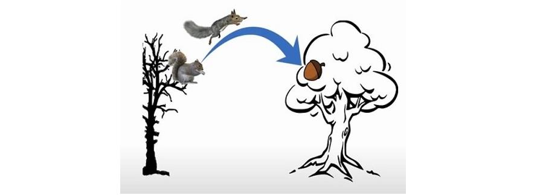

生物要有大脑就是因为需要运动！但大脑怎么计划、协调、执行运动命令呢？最优控制（Optimal Control）是一种可能的解释。但在开始深入讨论之前，我们需要先定下一个数学框架以便讨论。
1. 最优控制的数学框架
假设有一个动力系统，它的 状态 为 \((s)\) ，这里的状态指的是：用于描述、决定系统行为的变量的集合。
如果这个动力系统中，状态的变化只由状态本身决定，一个通用的描述此动力系统的方程如下：
\[ \dot{s}(t) = \frac{\mathrm{d}s}{\mathrm{d}t} = D(s(t)) \]
如果简化为线性动力系统，则可以描述为：
\[ \dot{s}(t) = \frac{\mathrm{d}s}{\mathrm{d}t} = D·s(t) \]
那么这个动力系统即被称为 自治动力系统（Autonomous Dynamical System) 。
然而这是非常简单的形式，现实中我们经常遇到的动力系统都会接收外部的输入,记为 \((a)\) (action, action taken on the system)， 那么类似地， 有外部输入 \((a)\) 的动力系统 的通用描述方程和线性描述方程分别为：
\[ \dot{s}(t) = \frac{\mathrm{d}s}{\mathrm{d}t} = D(s(t), a(t)) \]
\[ \dot{s}(t) = \frac{\mathrm{d}s}{\mathrm{d}t} = D·s(t) + B·a(t)\]

test